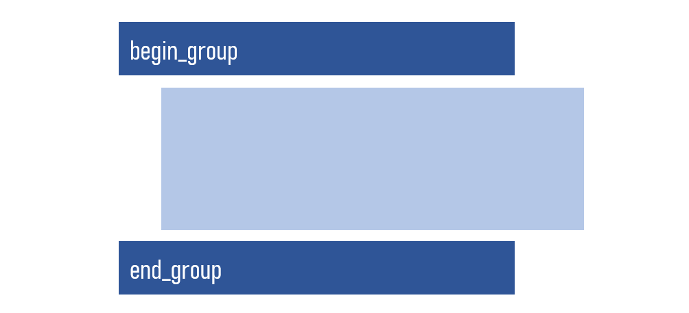
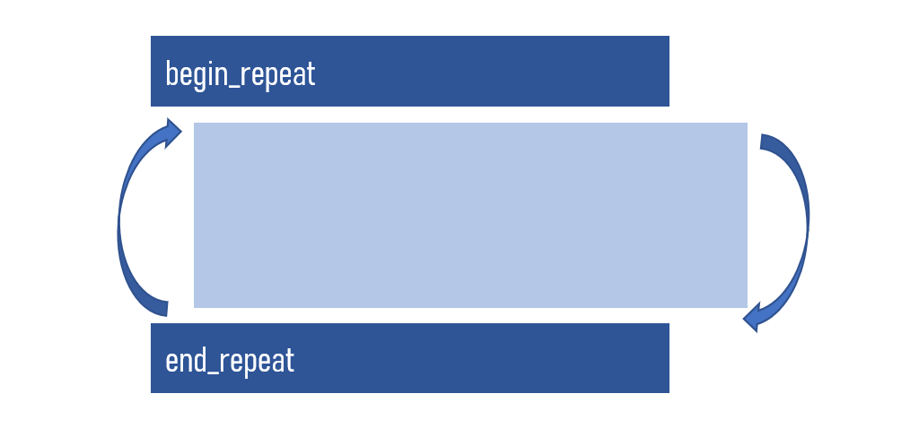

6 Conception du formulaire : partie 2
6.1 Attributs des variables
Un attribut de variable est une caractéristique qui décrit ou définit un comportement spécifique pour une variable. Il peut s’agir de rendre une question oblligatoire, de modifier son affichage, de la répéter un certain nombre de fois, et bien d’autres.
| Attributs | Utilité |
|---|---|
| hint | Ajouter un petit texte en bas de la question |
| required | Rendre une question obligatoire (yes) |
| constraint | Imposer une contrainte à une question |
| constraint_message | Afficher un message pour la contrainte |
| relevant | Effectuer un saut |
| calculation | Effectuer un calcul |
| default | Définir une valeur par défaut pour une question |
| appearance | Gérer l’apparence de questions sur l’écran |
| repeat_count | Répéter une question un certain nombre de fois |
Dans ce qui suit, nous allons voir comment mettre des sauts et contraintes dans un formulaire. Mais avant, voyons quelques opérateurs logiques et relationnels.
6.2 Opérateurs logiques et relationnels
Ces opérateurs nous permettent d’écrire nos différentes conditions (contraintes et sauts).
| Opérateurs logiques et relationnels | Signification |
|---|---|
| and | et logique |
| or | ou logique |
| > | supérieur à |
| >= | supérieur ou égal à |
| < | inférieur à |
| <= | inférieur ou égal à |
| = | égalité logique (égal à) |
| != | pas égal à (différent de) |
6.3 Sauts et contraintes
Pour faire référence à une variable dans XLSForm, nous utilisons le signe dollar ($) suivi des parentahèses ourverte et fermée, à l’interieur desquelles vous mettez le nom de la variable, comme suit : ${nom_de_la_variable}. Mais lorsque nous sommes sur la ligne d’une variable donnée, nous pouvons faire référence à celle-ci par un simple point (.).
6.3.1 Sauts
Un saut est une instruction qui permet de sauter une ou plusieurs questions dans le formulaire. Dans un questionnaire papier, il correspond à l’instrution du genre “Si Q100 égal à Oui, allez à Q102”. Dans un formulaire XLSForm, il correspond à une instruction à mettre sur la ligne de la question qu’on veut sauter. De cette façon, la question à sauter sera affichée si la condition est vérifiée.
Dans cet exemple, la question sur le nombre de mois de grossesse ne s’affiche à l’écran que si la femme a dit qu’elle est enceinte (“oui”).
| type | name | label | relevant |
|---|---|---|---|
| select_one ouinon_list | grossesse | Etes-vous enceinte ? | |
| integer | num_mois | De combien de mois est votre grossesse ? | ${grossesse}=“oui” |
| select_one ouinon_list | partenaire | Vivez vous avec votre partenaire ? |
Ici, la question sur les réseaux s’affiche quand il y a “oui” à la première question. Ensuite, la question du numéro vodacom ne s’affiche que si “vodacom” a été choisi dans la question sur les réseaux téléphoniques. Rémarquez la différence dans l’écriture du saut entre une question à réponse unique et à réponse multiple.
| type | name | label | relevant |
|---|---|---|---|
| select_one ouinon_list | tel | Avez-vous un téléphone ? | |
| select_multiple reseau_list | reseau | Quels réseaux téléphoninques utilisez-vous ? | ${tel}=“oui” |
| integer | num_voda | Quel est votre numéro vodacom ? | selected(${reseau}, “vodacom”) |
6.3.2 Contraintes
Imposer une contrainte à une variable, c’est restreindre celle-ci à être égale à une valeure donnée ou un intervalle de valeurs. Lorsqu’il y a une contrainte sur une variable, la condition de cette contrainte doit être remplie pour pouvoir continuer le remplissage du formulaire. Dans l’exemple suivant par exemple, tant que la valeur saisie pour l’âge est inférieure à 18 ou supérieure à 99, on ne peut pas aller au champ suivant.
| type | name | label | constraint |
|---|---|---|---|
| integer | age | Quel est votre âge ? | ${age}>=18 and ${age} <=99 |
| decimal | poids | Combien a pésé votre enfant à la dernière visite ? | .>=1 and .<=10 |
6.4 Groupe
Permet de regrouper un ensemble de questions. Il sert à :
afficher plusieurs questions sur le même écran
appliquer un saut à un ensemeble de questions
Le libellé du groupe est visible pour toutes les questions du groupe. Un groupe peut contenir un autre groupe
Si nous voulons afficher plusieurs quesions sur le même écran, il suffit de mettre le mot field-list dans la cellule croisant la ligne de la déclaration du groupe et la colonneappearance. On définit le groupe avec les mots begin_group et end_group comme le montre la figure suivante :

Les tableaux suivants donnent un exemple de l’utilisation de groupe.
| type | name | label |
|---|---|---|
| begin_group | group_1 | Identification |
| select_one prov_list | province | Nom de la province |
| select_one ville_list | ville | Nom de la ville |
| select_one comm_list | commune | Nom de la commune |
| end_group |
En ajoutant field-list, on peut afficher ces trois questions sur le même écran.
| type | name | label | appearance |
|---|---|---|---|
| begin_group | group_1 | Identification | field-list |
| select_one prov_list | province | Nom de la province | |
| select_one ville_list | ville | Nom de la ville | |
| select_one comm_list | commune | Nom de la commune | |
| end_group |
6.5 Répétition
Permet de répéter une ou plusieurs questions un certain nombre de fois. La répétition peut être utilisée lorsque vous voulez collecter les données sur plusieurs individus au sein d’une même unité statistiques et que le nombre de ces individus varie d’une unité à l’autre.
Exemple :
obtenir des informations sur chaque moustiquaire dans un ménage, le nombre de moustiquaires étant différent d’un ménage à l’autre.
obtenir des informations sur les membres du ménage dans une enquête ménage.
Le nombre de répétition peut être précisé sur la colonne repeat_count.
On définit le groupe avec les mots begin_repeat et end_repeat comme le montre la figure suivante :

Les tableaux suivants montre comment la répétition peut être utilisée.
| type | name | label |
|---|---|---|
| begin_repeat | rep_1 | Membres du ménage |
| text | nom | Nom de la personne |
| integer | age | Age de la personne |
| select_one sexe_list | sexe | Sexe de la personne |
| end_repeat |
Dans ce cas, au début de chaque répétition un message nous demandera si nous voulons ajouter une répétition. On met fin à la répétion en répondant non à ce message.
Il est aussi possible de préciser à l’avance le nombre de fois que les questions de la répétition vont se répéter. Pour cela, on utilise le nom de la variable qui définit le nombre de répétition dans la cellule entre la ligne de la déclaration de la répétition et la colonne repeat_count. Le tableau suivant en montre un exemple.
| type | name | label | repeat_count |
|---|---|---|---|
| integer | nb_personne | Nombre de personnes | |
| begin_repeat | rep_1 | Membres du ménage | ${nb_personne} |
| text | nom | Nom de la personne | |
| integer | age | Age de la personne | |
| select_one sexe_list | sexe | Sexe de la personne | |
| end_repeat |
Dans cet exemple, les trois dans la répétition vont se répétition selon la valeur saisie dans la variable nb_personne.
6.6 Sélection en cascade
La sélection consiste à faire plusieurs choix sur une liste imbriquée.
Il peut s’agir de la sélection successive d’une province, ville, commune, quartier, etc. La sélection en cascade permet alors de filtrer les unités secondaires en fonction des choix précédents, affichant ainsi les villes de la province séléctionnée, les communes de la ville sélectionnée, les quartiers de la commune sélectionnée, etc.
Avec XLSForm, on utilse la colonne ‘choice_filter’ sue la feuille survey pour effectuer le filtre. Sur la feuille choices, on ajoute une colonne dans laquelle les unités primaires en fonction des unités secondaires. Les choses pourront être plus claires avec un exemple.
Dans cet exemple, nous filtrons les villes en fonction de la province et les communes en fonction de la ville.
| type1 | name | label | choice_filter |
|---|---|---|---|
| select_one prov_list | province | Nom de la province | |
| select_one ville_list | ville | Nom de la ville | filtre = ${province} |
| select_one comm_list | commune | Nom de la commune | filtre = ${ville} |
| list_name | name | label | filtre |
|---|---|---|---|
| prov_list | 10 | Kinshasa | |
| prov_list | 20 | Haut-Katanga | |
| ville_list | 101 | Kinshasa | 10 |
| ville_list | 201 | Lubumbashi | 20 |
| comm_list | 1011 | Ngaliema | 101 |
| comm_list | 2011 | Kamalondo | 201 |